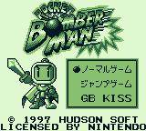
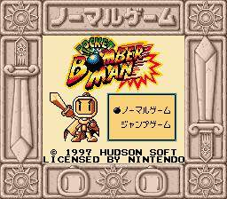

Switch Online
Official option
Some Game Boy Color games have been part of Nintendo Switch Online. Confirm this title is still in the current library. Where to Play does not host this game.
Nintendo Switch Online overview Official site
Image from this RAWG record. Powered by RAWG.
This Game Boy Color page is Pocket Bomberman (1997), matched to the Bomberman name family.
RAWG may show other hardware; this catalog keeps the Game Boy Color Nintendo line. The Bomberman grouping is a title match inside this catalog.
Pocket Bomberman is recorded here as a 1997 game. The lead system is Game Boy Color, 5th generation, color handheld. Game Boy Color is the color follow-up to Game Boy. It plays many older Game Boy cartridges and adds color-native games. Every other Game Boy Color game in this catalog is on the Game Boy Color page.
This slug names Game Boy Color only. RAWG sometimes tags the same record on other hardware. Those tags are not copied here unless this catalog treats them as the same Nintendo release.
The credit chip on this page reads See the RAWG record. RAWG lists no developer name and no publisher name. If those names disagree with the chip, both stay on the page so the record can be checked.
RAWG does not list genres on this record. The page does not invent any.
The date field is 1997-12-12; the user rating is 0.00 out of 5 from 1 ratings. Those fields belong to RAWG. This page does not add a score of its own.
Series context: this title belongs with Bomberman. Other Bomberman pages in the catalog run from 1983 to 2000, including Bomberman (1983), Bomberman II, Super Bomberman, Super Bomberman 2, Super Bomberman 3.
In this catalog, Bomberman is the family name. Same franchise lists spin-offs filed under their own heading, plus any further entries that did not fit the series list.
RAWG's own platform list for this record is game-boy-color, game-boy. This catalog keeps only the Nintendo systems named above. A personal computer, or another company's console, on that list is not a claim that this page covers that version.
Same series is the tight name match. Same franchise is the wider family. Same platform is other games on the systems named above.
The series list above is the whole family set in this catalog.
Facts in this grid are RAWG's, not our review. Open the RAWG record. RAWG.


Screenshots from this RAWG record. Powered by RAWG.
Some Game Boy Color games have been part of Nintendo Switch Online. Confirm this title is still in the current library. Where to Play does not host this game.
Nintendo Switch Online overview Official siteWe don't host this game. Confirm the title is still offered before you rely on a library note.